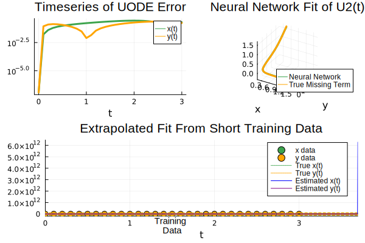

## Environment and packages
cd(@__DIR__)
using Pkg
Pkg.activate("lotka") Activating project at `~/Documents/GitHub/Julia-for-SciML/hands-on/lotka`
Sample code is modified from ChrisRackauckas/universsal_differential_equations. This is the part of the work of
Rackauckas, Christopher, et al. “Universal differential equations for scientific machine learning.” arXiv preprint arXiv:2001.04385 (2020).
## Environment and packages
cd(@__DIR__)
using Pkg
Pkg.activate("lotka") Activating project at `~/Documents/GitHub/Julia-for-SciML/hands-on/lotka`@info "Instantiate"
Pkg.instantiate() # This step will take a while for numerous packages┌ Info: Instantiate
└ @ Main In[2]:1
┌ Warning: The active manifest file is an older format with no julia version entry. Dependencies may have been resolved with a different julia version.
└ @ nothing /Users/stevenchiu/Documents/GitHub/Julia-for-SciML/hands-on/lotka/Manifest.toml:0] stStatus `~/Documents/GitHub/Julia-for-SciML/hands-on/lotka/Project.toml`
[c3fe647b] AbstractAlgebra v0.27.5
[621f4979] AbstractFFTs v1.2.1
[1520ce14] AbstractTrees v0.4.3
[7d9f7c33] Accessors v0.1.20
[79e6a3ab] Adapt v3.4.0
[dce04be8] ArgCheck v2.3.0
⌅ [ec485272] ArnoldiMethod v0.1.0
[4fba245c] ArrayInterface v6.0.23
[30b0a656] ArrayInterfaceCore v0.1.22
[6ba088a2] ArrayInterfaceGPUArrays v0.2.2
[015c0d05] ArrayInterfaceOffsetArrays v0.1.6
[b0d46f97] ArrayInterfaceStaticArrays v0.1.4
[dd5226c6] ArrayInterfaceStaticArraysCore v0.1.3
[a2b0951a] ArrayInterfaceTracker v0.1.1
[4c555306] ArrayLayouts v0.8.12
[15f4f7f2] AutoHashEquals v0.2.0
[13072b0f] AxisAlgorithms v1.0.1
⌅ [ab4f0b2a] BFloat16s v0.2.0
[aae01518] BandedMatrices v0.17.7
[198e06fe] BangBang v0.3.37
[9718e550] Baselet v0.1.1
[e2ed5e7c] Bijections v0.1.4
[62783981] BitTwiddlingConvenienceFunctions v0.1.4
[8e7c35d0] BlockArrays v0.16.21
[ffab5731] BlockBandedMatrices v0.11.9
[fa961155] CEnum v0.4.2
[2a0fbf3d] CPUSummary v0.1.27
[00ebfdb7] CSTParser v3.3.6
[052768ef] CUDA v3.12.0
[49dc2e85] Calculus v0.5.1
[7057c7e9] Cassette v0.3.10
[082447d4] ChainRules v1.44.7
[d360d2e6] ChainRulesCore v1.15.6
[9e997f8a] ChangesOfVariables v0.1.4
[fb6a15b2] CloseOpenIntervals v0.1.10
[944b1d66] CodecZlib v0.7.0
[35d6a980] ColorSchemes v3.19.0
[3da002f7] ColorTypes v0.11.4
[c3611d14] ColorVectorSpace v0.9.9
[5ae59095] Colors v0.12.8
[861a8166] Combinatorics v1.0.2
[a80b9123] CommonMark v0.8.6
[38540f10] CommonSolve v0.2.1
[bbf7d656] CommonSubexpressions v0.3.0
[34da2185] Compat v4.3.0
[b0b7db55] ComponentArrays v0.13.4
[b152e2b5] CompositeTypes v0.1.2
[a33af91c] CompositionsBase v0.1.1
[88cd18e8] ConsoleProgressMonitor v0.1.2
[187b0558] ConstructionBase v1.4.1
[6add18c4] ContextVariablesX v0.1.3
[d38c429a] Contour v0.6.2
[adafc99b] CpuId v0.3.1
[a8cc5b0e] Crayons v4.1.1
[9a962f9c] DataAPI v1.12.0
[2445eb08] DataDrivenDiffEq v0.8.5
[82cc6244] DataInterpolations v3.10.1
[864edb3b] DataStructures v0.18.13
[e2d170a0] DataValueInterfaces v1.0.0
[244e2a9f] DefineSingletons v0.1.2
[b429d917] DensityInterface v0.4.0
[2b5f629d] DiffEqBase v6.105.1
[459566f4] DiffEqCallbacks v2.24.2
[c894b116] DiffEqJump v8.6.3
[77a26b50] DiffEqNoiseProcess v5.13.1
[9fdde737] DiffEqOperators v4.43.1
[41bf760c] DiffEqSensitivity v6.79.0
[163ba53b] DiffResults v1.1.0
[b552c78f] DiffRules v1.12.0
[b4f34e82] Distances v0.10.7
[31c24e10] Distributions v0.25.76
[ced4e74d] DistributionsAD v0.6.43
⌅ [ffbed154] DocStringExtensions v0.8.6
[5b8099bc] DomainSets v0.5.14
[fa6b7ba4] DualNumbers v0.6.8
[7c1d4256] DynamicPolynomials v0.4.5
[da5c29d0] EllipsisNotation v1.6.0
[7da242da] Enzyme v0.10.12
[d4d017d3] ExponentialUtilities v1.19.0
[e2ba6199] ExprTools v0.1.8
[c87230d0] FFMPEG v0.4.1
[7a1cc6ca] FFTW v1.5.0
[cc61a311] FLoops v0.2.1
[b9860ae5] FLoopsBase v0.1.1
[7034ab61] FastBroadcast v0.2.1
[9aa1b823] FastClosures v0.3.2
[29a986be] FastLapackInterface v1.2.7
[5789e2e9] FileIO v1.16.0
[1a297f60] FillArrays v0.13.5
[6a86dc24] FiniteDiff v2.15.0
[53c48c17] FixedPointNumbers v0.8.4
[587475ba] Flux v0.13.6
[9c68100b] FoldsThreads v0.1.1
[59287772] Formatting v0.4.2
[f6369f11] ForwardDiff v0.10.32
[069b7b12] FunctionWrappers v1.1.3
[d9f16b24] Functors v0.3.0
[0c68f7d7] GPUArrays v8.5.0
[46192b85] GPUArraysCore v0.1.2
[61eb1bfa] GPUCompiler v0.16.4
[28b8d3ca] GR v0.69.5
[a75be94c] GalacticOptim v3.4.0
[c145ed77] GenericSchur v0.5.3
[5c1252a2] GeometryBasics v0.4.4
[af5da776] GlobalSensitivity v2.1.2
[86223c79] Graphs v1.7.4
[42e2da0e] Grisu v1.0.2
[0b43b601] Groebner v0.2.10
[d5909c97] GroupsCore v0.4.0
[cd3eb016] HTTP v1.5.0
[3e5b6fbb] HostCPUFeatures v0.1.8
[0e44f5e4] Hwloc v2.2.0
[34004b35] HypergeometricFunctions v0.3.11
[b5f81e59] IOCapture v0.2.2
[7869d1d1] IRTools v0.4.7
[615f187c] IfElse v0.1.1
[d25df0c9] Inflate v0.1.3
[83e8ac13] IniFile v0.5.1
[22cec73e] InitialValues v0.3.1
[18e54dd8] IntegerMathUtils v0.1.0
[a98d9a8b] Interpolations v0.14.6
[8197267c] IntervalSets v0.7.3
[3587e190] InverseFunctions v0.1.8
[92d709cd] IrrationalConstants v0.1.1
[c8e1da08] IterTools v1.4.0
[42fd0dbc] IterativeSolvers v0.9.2
[82899510] IteratorInterfaceExtensions v1.0.0
[033835bb] JLD2 v0.4.25
[692b3bcd] JLLWrappers v1.4.1
[682c06a0] JSON v0.21.3
[98e50ef6] JuliaFormatter v1.0.13
[b14d175d] JuliaVariables v0.2.4
[ccbc3e58] JumpProcesses v9.2.0
[e5e0dc1b] Juno v0.8.4
⌅ [ef3ab10e] KLU v0.3.0
[5ab0869b] KernelDensity v0.6.5
[ba0b0d4f] Krylov v0.8.4
[0b1a1467] KrylovKit v0.5.4
[929cbde3] LLVM v4.14.0
[b964fa9f] LaTeXStrings v1.3.0
[2ee39098] LabelledArrays v1.12.3
[23fbe1c1] Latexify v0.15.17
[a5e1c1ea] LatinHypercubeSampling v1.8.0
[73f95e8e] LatticeRules v0.0.1
[10f19ff3] LayoutPointers v0.1.11
[50d2b5c4] Lazy v0.15.1
[5078a376] LazyArrays v0.22.12
⌅ [d7e5e226] LazyBandedMatrices v0.7.17
[0fc2ff8b] LeastSquaresOptim v0.8.3
[1d6d02ad] LeftChildRightSiblingTrees v0.2.0
[2d8b4e74] LevyArea v1.0.0
[093fc24a] LightGraphs v1.3.5
[d3d80556] LineSearches v7.2.0
[7ed4a6bd] LinearSolve v1.27.0
[98b081ad] Literate v2.14.0
[2ab3a3ac] LogExpFunctions v0.3.18
[e6f89c97] LoggingExtras v0.4.9
[bdcacae8] LoopVectorization v0.12.136
[b2108857] Lux v0.4.29
[d8e11817] MLStyle v0.4.14
[f1d291b0] MLUtils v0.2.11
[1914dd2f] MacroTools v0.5.10
[d125e4d3] ManualMemory v0.1.8
[a3b82374] MatrixFactorizations v0.9.3
[739be429] MbedTLS v1.1.6
[eff96d63] Measurements v2.8.0
[442fdcdd] Measures v0.3.1
[e89f7d12] Media v0.5.0
[c03570c3] Memoize v0.4.4
[e9d8d322] Metatheory v1.3.5
[128add7d] MicroCollections v0.1.3
[e1d29d7a] Missings v1.0.2
[961ee093] ModelingToolkit v8.29.1
[46d2c3a1] MuladdMacro v0.2.2
[102ac46a] MultivariatePolynomials v0.4.6
[d8a4904e] MutableArithmetics v1.0.5
[d41bc354] NLSolversBase v7.8.2
[2774e3e8] NLsolve v4.5.1
[872c559c] NNlib v0.8.9
[a00861dc] NNlibCUDA v0.2.4
[77ba4419] NaNMath v1.0.1
[71a1bf82] NameResolution v0.1.5
[8913a72c] NonlinearSolve v0.3.22
[d8793406] ObjectFile v0.3.7
[6fe1bfb0] OffsetArrays v1.12.8
[429524aa] Optim v1.7.3
[3bd65402] Optimisers v0.2.10
[7f7a1694] Optimization v3.9.2
[36348300] OptimizationOptimJL v0.1.3
[42dfb2eb] OptimizationOptimisers v0.1.0
[bac558e1] OrderedCollections v1.4.1
[1dea7af3] OrdinaryDiffEq v6.29.3
[90014a1f] PDMats v0.11.16
[d96e819e] Parameters v0.12.3
[69de0a69] Parsers v2.4.2
[ccf2f8ad] PlotThemes v3.1.0
[995b91a9] PlotUtils v1.3.1
[91a5bcdd] Plots v1.35.4
[e409e4f3] PoissonRandom v0.4.1
[f517fe37] Polyester v0.6.16
[1d0040c9] PolyesterWeave v0.1.10
[85a6dd25] PositiveFactorizations v0.2.4
[d236fae5] PreallocationTools v0.4.4
[21216c6a] Preferences v1.3.0
[8162dcfd] PrettyPrint v0.2.0
[27ebfcd6] Primes v0.5.3
[33c8b6b6] ProgressLogging v0.1.4
[92933f4c] ProgressMeter v1.7.2
[1fd47b50] QuadGK v2.5.0
[8a4e6c94] QuasiMonteCarlo v0.2.14
[74087812] Random123 v1.6.0
[fb686558] RandomExtensions v0.4.3
[e6cf234a] RandomNumbers v1.5.3
[c84ed2f1] Ratios v0.4.3
[c1ae055f] RealDot v0.1.0
[3cdcf5f2] RecipesBase v1.3.1
[01d81517] RecipesPipeline v0.6.7
[731186ca] RecursiveArrayTools v2.32.0
[f2c3362d] RecursiveFactorization v0.2.12
[189a3867] Reexport v1.2.2
[42d2dcc6] Referenceables v0.1.2
[29dad682] RegularizationTools v0.6.0
[05181044] RelocatableFolders v1.0.0
[ae029012] Requires v1.3.0
[ae5879a3] ResettableStacks v1.1.1
[37e2e3b7] ReverseDiff v1.14.4
[79098fc4] Rmath v0.7.0
[7e49a35a] RuntimeGeneratedFunctions v0.5.3
[3cdde19b] SIMDDualNumbers v0.1.1
[94e857df] SIMDTypes v0.1.0
[476501e8] SLEEFPirates v0.6.36
[1bc83da4] SafeTestsets v0.0.1
[0bca4576] SciMLBase v1.63.0
[6c6a2e73] Scratch v1.1.1
[efcf1570] Setfield v1.1.1
[605ecd9f] ShowCases v0.1.0
[992d4aef] Showoff v1.0.3
[777ac1f9] SimpleBufferStream v1.1.0
[699a6c99] SimpleTraits v0.9.4
[ed01d8cd] Sobol v1.5.0
[a2af1166] SortingAlgorithms v1.0.1
[47a9eef4] SparseDiffTools v1.27.0
[276daf66] SpecialFunctions v2.1.7
[171d559e] SplittablesBase v0.1.15
[860ef19b] StableRNGs v1.0.0
[aedffcd0] Static v0.7.7
[90137ffa] StaticArrays v1.5.9
[1e83bf80] StaticArraysCore v1.4.0
[82ae8749] StatsAPI v1.5.0
[2913bbd2] StatsBase v0.33.21
[4c63d2b9] StatsFuns v1.0.1
[789caeaf] StochasticDiffEq v6.54.0
[7792a7ef] StrideArraysCore v0.3.15
[09ab397b] StructArrays v0.6.13
[53d494c1] StructIO v0.3.0
[d1185830] SymbolicUtils v0.19.11
[0c5d862f] Symbolics v4.13.0
[3783bdb8] TableTraits v1.0.1
[bd369af6] Tables v1.10.0
[62fd8b95] TensorCore v0.1.1
⌅ [8ea1fca8] TermInterface v0.2.3
[5d786b92] TerminalLoggers v0.1.6
[8290d209] ThreadingUtilities v0.5.0
[ac1d9e8a] ThreadsX v0.1.11
[a759f4b9] TimerOutputs v0.5.21
[0796e94c] Tokenize v0.5.24
[9f7883ad] Tracker v0.2.22
[3bb67fe8] TranscodingStreams v0.9.9
[28d57a85] Transducers v0.4.74
[592b5752] Trapz v2.0.3
[a2a6695c] TreeViews v0.3.0
[d5829a12] TriangularSolve v0.1.14
[5c2747f8] URIs v1.4.0
[3a884ed6] UnPack v1.0.2
[d9a01c3f] Underscores v3.0.0
[1cfade01] UnicodeFun v0.4.1
[1986cc42] Unitful v1.12.0
[41fe7b60] Unzip v0.2.0
[3d5dd08c] VectorizationBase v0.21.54
[19fa3120] VertexSafeGraphs v0.2.0
[efce3f68] WoodburyMatrices v0.5.5
[a5390f91] ZipFile v0.10.0
[e88e6eb3] Zygote v0.6.49
[700de1a5] ZygoteRules v0.2.2
[6e34b625] Bzip2_jll v1.0.8+0
[83423d85] Cairo_jll v1.16.1+1
[5ae413db] EarCut_jll v2.2.4+0
[7cc45869] Enzyme_jll v0.0.43+0
[2e619515] Expat_jll v2.4.8+0
[b22a6f82] FFMPEG_jll v4.4.2+2
[f5851436] FFTW_jll v3.3.10+0
[a3f928ae] Fontconfig_jll v2.13.93+0
[d7e528f0] FreeType2_jll v2.10.4+0
[559328eb] FriBidi_jll v1.0.10+0
[0656b61e] GLFW_jll v3.3.8+0
[d2c73de3] GR_jll v0.69.1+0
[78b55507] Gettext_jll v0.21.0+0
[7746bdde] Glib_jll v2.74.0+1
[3b182d85] Graphite2_jll v1.3.14+0
[2e76f6c2] HarfBuzz_jll v2.8.1+1
[e33a78d0] Hwloc_jll v2.8.0+1
[1d5cc7b8] IntelOpenMP_jll v2018.0.3+2
[aacddb02] JpegTurbo_jll v2.1.2+0
[c1c5ebd0] LAME_jll v3.100.1+0
[88015f11] LERC_jll v3.0.0+1
[dad2f222] LLVMExtra_jll v0.0.16+0
[dd4b983a] LZO_jll v2.10.1+0
[dd192d2f] LibVPX_jll v1.10.0+0
[e9f186c6] Libffi_jll v3.2.2+1
[d4300ac3] Libgcrypt_jll v1.8.7+0
[7e76a0d4] Libglvnd_jll v1.3.0+3
[7add5ba3] Libgpg_error_jll v1.42.0+0
[94ce4f54] Libiconv_jll v1.16.1+1
[4b2f31a3] Libmount_jll v2.35.0+0
[89763e89] Libtiff_jll v4.4.0+0
[38a345b3] Libuuid_jll v2.36.0+0
[856f044c] MKL_jll v2022.2.0+0
[e7412a2a] Ogg_jll v1.3.5+1
[458c3c95] OpenSSL_jll v1.1.17+0
[efe28fd5] OpenSpecFun_jll v0.5.5+0
[91d4177d] Opus_jll v1.3.2+0
[2f80f16e] PCRE_jll v8.44.0+0
[30392449] Pixman_jll v0.40.1+0
[ea2cea3b] Qt5Base_jll v5.15.3+1
[f50d1b31] Rmath_jll v0.3.0+0
[a2964d1f] Wayland_jll v1.19.0+0
[2381bf8a] Wayland_protocols_jll v1.25.0+0
[02c8fc9c] XML2_jll v2.9.14+0
[aed1982a] XSLT_jll v1.1.34+0
[4f6342f7] Xorg_libX11_jll v1.6.9+4
[0c0b7dd1] Xorg_libXau_jll v1.0.9+4
[935fb764] Xorg_libXcursor_jll v1.2.0+4
[a3789734] Xorg_libXdmcp_jll v1.1.3+4
[1082639a] Xorg_libXext_jll v1.3.4+4
[d091e8ba] Xorg_libXfixes_jll v5.0.3+4
[a51aa0fd] Xorg_libXi_jll v1.7.10+4
[d1454406] Xorg_libXinerama_jll v1.1.4+4
[ec84b674] Xorg_libXrandr_jll v1.5.2+4
[ea2f1a96] Xorg_libXrender_jll v0.9.10+4
[14d82f49] Xorg_libpthread_stubs_jll v0.1.0+3
[c7cfdc94] Xorg_libxcb_jll v1.13.0+3
[cc61e674] Xorg_libxkbfile_jll v1.1.0+4
[12413925] Xorg_xcb_util_image_jll v0.4.0+1
[2def613f] Xorg_xcb_util_jll v0.4.0+1
[975044d2] Xorg_xcb_util_keysyms_jll v0.4.0+1
[0d47668e] Xorg_xcb_util_renderutil_jll v0.3.9+1
[c22f9ab0] Xorg_xcb_util_wm_jll v0.4.1+1
[35661453] Xorg_xkbcomp_jll v1.4.2+4
[33bec58e] Xorg_xkeyboard_config_jll v2.27.0+4
[c5fb5394] Xorg_xtrans_jll v1.4.0+3
[3161d3a3] Zstd_jll v1.5.2+0
[a4ae2306] libaom_jll v3.4.0+0
[0ac62f75] libass_jll v0.15.1+0
[f638f0a6] libfdk_aac_jll v2.0.2+0
[b53b4c65] libpng_jll v1.6.38+0
[f27f6e37] libvorbis_jll v1.3.7+1
[1270edf5] x264_jll v2021.5.5+0
[dfaa095f] x265_jll v3.5.0+0
[d8fb68d0] xkbcommon_jll v1.4.1+0
[0dad84c5] ArgTools v1.1.1
[56f22d72] Artifacts
[2a0f44e3] Base64
[ade2ca70] Dates
[8bb1440f] DelimitedFiles
[8ba89e20] Distributed
[f43a241f] Downloads v1.6.0
[7b1f6079] FileWatching
[9fa8497b] Future
[b77e0a4c] InteractiveUtils
[4af54fe1] LazyArtifacts
[b27032c2] LibCURL v0.6.3
[76f85450] LibGit2
[8f399da3] Libdl
[37e2e46d] LinearAlgebra
[56ddb016] Logging
[d6f4376e] Markdown
[a63ad114] Mmap
[ca575930] NetworkOptions v1.2.0
[44cfe95a] Pkg v1.8.0
[de0858da] Printf
[9abbd945] Profile
[3fa0cd96] REPL
[9a3f8284] Random
[ea8e919c] SHA v0.7.0
[9e88b42a] Serialization
[1a1011a3] SharedArrays
[6462fe0b] Sockets
[2f01184e] SparseArrays
[10745b16] Statistics
[4607b0f0] SuiteSparse
[fa267f1f] TOML v1.0.0
[a4e569a6] Tar v1.10.1
[8dfed614] Test
[cf7118a7] UUIDs
[4ec0a83e] Unicode
[e66e0078] CompilerSupportLibraries_jll v0.5.2+0
[deac9b47] LibCURL_jll v7.84.0+0
[29816b5a] LibSSH2_jll v1.10.2+0
[c8ffd9c3] MbedTLS_jll v2.28.0+0
[14a3606d] MozillaCACerts_jll v2022.2.1
[4536629a] OpenBLAS_jll v0.3.20+0
[05823500] OpenLibm_jll v0.8.1+0
[bea87d4a] SuiteSparse_jll v5.10.1+0
[83775a58] Zlib_jll v1.2.12+3
[8e850b90] libblastrampoline_jll v5.1.1+0
[8e850ede] nghttp2_jll v1.48.0+0
[3f19e933] p7zip_jll v17.4.0+0
Info Packages marked with ⌅ have new versions available but compatibility constraints restrict them from upgrading. To see why use `status --outdated`@info "Precompile"
using OrdinaryDiffEq
using ModelingToolkit
using DataDrivenDiffEq
using LinearAlgebra, ComponentArrays
using Optimization, OptimizationOptimisers, OptimizationOptimJL #OptimizationFlux for ADAM and OptimizationOptimJL for BFGS
using DiffEqSensitivity
using Lux
using Plots
gr()
using Statistics
# Set a random seed for reproduceable behaviour
using Random
rng = Random.default_rng()
Random.seed!(1234);
@info "Complete Precompilation"┌ Info: Precompile
└ @ Main In[4]:1
┌ Info: Precompiling ModelingToolkit [961ee093-0014-501f-94e3-6117800e7a78]
└ @ Base loading.jl:1664
┌ Info: Precompiling DataDrivenDiffEq [2445eb08-9709-466a-b3fc-47e12bd697a2]
└ @ Base loading.jl:1664
┌ Warning: The variable syntax (u[1:n])(t) is deprecated. Use (u(t))[1:n] instead.
│ The former creates an array of functions, while the latter creates an array valued function.
│ The deprecated syntax will cause an error in the next major release of Symbolics.
│ This change will facilitate better implementation of various features of Symbolics.
└ @ Symbolics ~/.julia/packages/Symbolics/FGTCH/src/variable.jl:129
┌ Warning: Type annotations on keyword arguments not currently supported in recipes. Type information has been discarded
└ @ RecipesBase ~/.julia/packages/RecipesBase/6AijY/src/RecipesBase.jl:117
┌ Info: Precompiling Plots [91a5bcdd-55d7-5caf-9e0b-520d859cae80]
└ @ Base loading.jl:1664
┌ Info: Complete Precompilation
└ @ Main In[4]:17For simplicity, we use Lotka-Volterra system as an example
\[\begin{align} \dot{x} &= \alpha x - \beta xy\\ \dot{y} &= \gamma xy- \delta y \end{align}\]
where \(\alpha, \beta, \gamma\), and \(\delta\) are positive real parameters
## Data generation
function lotka!(du, u, p, t)
α, β, γ, δ = p
du[1] = α*u[1] - β*u[2]*u[1]
du[2] = γ*u[1]*u[2] - δ*u[2]
endlotka! (generic function with 1 method)# Define the experimental parameter
tspan = (0.0,3.0)
u0 = [0.44249296,4.6280594]
p_ = [1.3, 0.9, 0.8, 1.8]4-element Vector{Float64}:
1.3
0.9
0.8
1.8Vern7 is used for non-stiff problems. Numerous solvers can be found on DifferentialEquations.jl’s doc# Solve
prob = ODEProblem(lotka!, u0,tspan, p_)
solution = solve(prob, Vern7(), abstol=1e-12, reltol=1e-12, saveat = 0.1)retcode: Success
Interpolation: 1st order linear
t: 31-element Vector{Float64}:
0.0
0.1
0.2
0.3
0.4
0.5
0.6
0.7
0.8
0.9
1.0
1.1
1.2
⋮
1.9
2.0
2.1
2.2
2.3
2.4
2.5
2.6
2.7
2.8
2.9
3.0
u: 31-element Vector{Vector{Float64}}:
[0.44249296, 4.6280594]
[0.34212452862086234, 3.98764547181634]
[0.2793966078254349, 3.4139529441083147]
[0.2394952228707143, 2.9110318130603883]
[0.21413620714095402, 2.4758280205419836]
[0.19854852659179129, 2.1022922430734137]
[0.18991187927524103, 1.7834096349202704]
[0.18652973211225643, 1.5121821427640152]
[0.18737918127509637, 1.2820806846455604]
[0.1918587411736629, 1.087227597605956]
[0.1996432344128222, 0.9224424008592909]
[0.2105985019620811, 0.7832199752377471]
[0.22473063540355143, 0.6656774980182895]
⋮
[0.4333056937367298, 0.22471175932636067]
[0.48425346211989406, 0.1947029152564331]
[0.5425361548950363, 0.16943926722620506]
[0.6091040110729008, 0.14819092695665834]
[0.6850407509453579, 0.13034710141497852]
[0.7715795653361799, 0.11539841080610512]
[0.8701212001899306, 0.10292221843899205]
[0.9822541897624152, 0.09257065810821445]
[1.1097772412678872, 0.08406114122763123]
[1.2547236687788759, 0.07716924328704818]
[1.419387582491876, 0.07172402271816045]
[1.606351205697802, 0.06760604257226555]# Ideal data
X = Array(solution)
t = solution.t
DX = Array(solution(solution.t, Val{1}))
full_problem = DataDrivenProblem(X, t = t, DX = DX)
# Add noise in terms of the mean
x̄ = mean(X, dims = 2)
noise_magnitude = 5e-3
Xₙ = X .+ (noise_magnitude*x̄) .* randn(eltype(X), size(X))2×31 Matrix{Float64}:
0.444955 0.344412 0.277873 0.246362 … 1.2542 1.41631 1.60945
4.6231 3.98748 3.40663 2.91876 0.0810739 0.0772539 0.0672219plot(solution, alpha = 0.75, color = :black, label = ["True Data" nothing])
scatter!(t, transpose(Xₙ), color = :red, label = ["Noisy Data" nothing])Suppose we only know part of the Lotka-Voltera model, and use CNN to surrogate the unknown part
\[\begin{align} \dot{x} &= \theta_1 x + U_1(\theta_3, x, y)\\ \dot{y} &= -\theta_2 y + U_2(\theta_3..., x, y) \end{align}\]
## Define the network
# Gaussian RBF as activation
rbf(x) = exp.(-(x.^2))
# Multilayer FeedForward
U = Lux.Chain(
Lux.Dense(2,5,rbf), Lux.Dense(5,5, rbf), Lux.Dense(5,5, rbf), Lux.Dense(5,2)
)
# Get the initial parameters and state variables of the model
p, st = Lux.setup(rng, U)
# Define the hybrid model
function ude_dynamics!(du,u, p, t, p_true)
û = U(u, p, st)[1] # Network prediction
du[1] = p_true[1]*u[1] + û[1]
du[2] = -p_true[4]*u[2] + û[2]
endude_dynamics! (generic function with 1 method)# Closure with the known parameter
nn_dynamics!(du,u,p,t) = ude_dynamics!(du,u,p,t,p_)
# Define the problem (Fix: https://discourse.julialang.org/t/issue-with-ude-repository-lv-scenario-1/88618/5)
prob_nn = ODEProblem{true, SciMLBase.FullSpecialize}(nn_dynamics!,Xₙ[:, 1], tspan, p)
#prob_nn = ODEProblem(nn_dynamics!,Xₙ[:, 1], tspan, p)ODEProblem with uType Vector{Float64} and tType Float64. In-place: true timespan: (0.0, 3.0) u0: 2-element Vector{Float64}: 0.44495468189157616 4.623098367786485
## Function to train the network
# Define a predictor
function predict(θ, X = Xₙ[:,1], T = t)
_prob = remake(prob_nn, u0 = X, tspan = (T[1], T[end]), p = θ)
Array(solve(_prob, Vern7(), saveat = T,
abstol=1e-6, reltol=1e-6,
sensealg = ForwardDiffSensitivity()
))
end
# Simple L2 loss
function loss(θ)
X̂ = predict(θ)
sum(abs2, Xₙ .- X̂)
end
# Container to track the losses
losses = Float64[]
callback = function (p, l)
push!(losses, l)
if length(losses)%50==0
println("Current loss after $(length(losses)) iterations: $(losses[end])")
end
return false
end#1 (generic function with 1 method)The training is splitted to two steps: 1. ADAM: for better convergence 2. BFGS: get better position
adtype = Optimization.AutoZygote()
optf = Optimization.OptimizationFunction((x,p)->loss(x), adtype)
optprob = Optimization.OptimizationProblem(optf, ComponentVector{Float64}(p))
res1 = Optimization.solve(optprob, ADAM(0.1), callback=callback, maxiters = 200)
@info "Training loss after $(length(losses)) iterations: $(losses[end])"
# Train with BFGS
@time optprob2 = Optimization.OptimizationProblem(optf, res1.minimizer)
@time res2 = Optimization.solve(optprob2, Optim.BFGS(initial_stepnorm=0.01), callback=callback, maxiters = 3000)
@info "Final training loss after $(length(losses)) iterations: $(losses[end])"Current loss after 50 iterations: 3.2919945635723753
Current loss after 100 iterations: 1.7058558916650455
Current loss after 150 iterations: 1.6697049368588788
Current loss after 200 iterations: 1.6423084245679131
0.002839 seconds (946 allocations: 59.323 KiB, 97.18% compilation time)┌ Info: Training loss after 201 iterations: 1.6423084245679131
└ @ Main In[13]:6Current loss after 250 iterations: 0.023661287470332845
Current loss after 300 iterations: 0.013746817618177573
Current loss after 350 iterations: 0.0032781193503113072
Current loss after 400 iterations: 0.0017736994450182483
Current loss after 450 iterations: 0.0016452061747373918
Current loss after 500 iterations: 0.001415755561505311
Current loss after 550 iterations: 0.001226557886040906
Current loss after 600 iterations: 0.001107089612914693
Current loss after 650 iterations: 0.0009982934123468784
Current loss after 700 iterations: 0.0009875749757684356
Current loss after 750 iterations: 0.0009812594981828098
Current loss after 800 iterations: 0.0009796658875397177
Current loss after 850 iterations: 0.0009793537523280391
Current loss after 900 iterations: 0.0009772977493860333
Current loss after 950 iterations: 0.0009743301969273224
Current loss after 1000 iterations: 0.0009727084653298941
Current loss after 1050 iterations: 0.000972080483835656
Current loss after 1100 iterations: 0.0009717534715880698
Current loss after 1150 iterations: 0.0009656859249757323
Current loss after 1200 iterations: 0.000962561381268262
Current loss after 1250 iterations: 0.0009612859817110582
Current loss after 1300 iterations: 0.0009591475053966475
Current loss after 1350 iterations: 0.0009582234874165839
Current loss after 1400 iterations: 0.0009574676566527876
Current loss after 1450 iterations: 0.0009569122026897299
Current loss after 1500 iterations: 0.0009567527113130108
Current loss after 1550 iterations: 0.0009561199657093553
Current loss after 1600 iterations: 0.0009549884254749657
Current loss after 1650 iterations: 0.0009541600089060593
Current loss after 1700 iterations: 0.0009537452602046372
Current loss after 1750 iterations: 0.0009536569492935126
Current loss after 1800 iterations: 0.0009534426125349452
Current loss after 1850 iterations: 0.0009532818826279794
Current loss after 1900 iterations: 0.0009530863107623305
Current loss after 1950 iterations: 0.0009529698205412621
Current loss after 2000 iterations: 0.0009528567762890976
Current loss after 2050 iterations: 0.0009525373206446654
Current loss after 2100 iterations: 0.0009521593217738839
Current loss after 2150 iterations: 0.0009520958641338131
Current loss after 2200 iterations: 0.0009520568498258301
Current loss after 2250 iterations: 0.0009517387568709354
Current loss after 2300 iterations: 0.0009516121690135998
Current loss after 2350 iterations: 0.0009514360660860543
Current loss after 2400 iterations: 0.0009512526383059336
Current loss after 2450 iterations: 0.0009511495748527354
Current loss after 2500 iterations: 0.000951106817478341
Current loss after 2550 iterations: 0.0009510985159145336
Current loss after 2600 iterations: 0.0009509270459168483
Current loss after 2650 iterations: 0.000950863437522074
Current loss after 2700 iterations: 0.0009507791033767345
Current loss after 2750 iterations: 0.000950657136744276
Current loss after 2800 iterations: 0.0009506293508157388
Current loss after 2850 iterations: 0.0009506101911525282
Current loss after 2900 iterations: 0.0009504534699507922
Current loss after 2950 iterations: 0.0009504069207206256
Current loss after 3000 iterations: 0.0009503383212540466
Current loss after 3050 iterations: 0.0009503196958639988
Current loss after 3100 iterations: 0.0009502399212363976
Current loss after 3150 iterations: 0.0009501939332356801
Current loss after 3200 iterations: 0.0009501728013450467
980.071985 seconds (629.24 M allocations: 116.047 GiB, 1.16% gc time, 0.19% compilation time)┌ Info: Final training loss after 3202 iterations: 0.0009501727548593611
└ @ Main In[13]:10# Plot the losses
pl_losses = plot(1:200, losses[1:200], yaxis = :log10, xaxis = :log10, xlabel = "Iterations", ylabel = "Loss", label = "ADAM", color = :blue)
plot!(201:length(losses), losses[201:end], yaxis = :log10, xaxis = :log10, xlabel = "Iterations", ylabel = "Loss", label = "BFGS", color = :red)# Rename the best candidate
p_trained = res2.minimizer;## Analysis of the trained network
# Plot the data and the approximation
ts = first(solution.t):mean(diff(solution.t))/2:last(solution.t)
X̂ = predict(p_trained, Xₙ[:,1], ts)
# Trained on noisy data vs real solution
pl_trajectory = plot(ts, transpose(X̂), xlabel = "t", ylabel ="x(t), y(t)", color = :red, label = ["UDE Approximation" nothing])
scatter!(solution.t, transpose(Xₙ), color = :black, label = ["Measurements" nothing])
# Ideal unknown interactions of the predictor
Ȳ = [-p_[2]*(X̂[1,:].*X̂[2,:])';p_[3]*(X̂[1,:].*X̂[2,:])']
# Neural network guess
Ŷ = U(X̂,p_trained,st)[1]
pl_reconstruction = plot(ts, transpose(Ŷ), xlabel = "t", ylabel ="U(x,y)", color = :red, label = ["UDE Approximation" nothing])
plot!(ts, transpose(Ȳ), color = :black, label = ["True Interaction" nothing])
# Plot the error
pl_reconstruction_error = plot(ts, norm.(eachcol(Ȳ-Ŷ)), yaxis = :log, xlabel = "t", ylabel = "L2-Error", label = nothing, color = :red)
pl_missing = plot(pl_reconstruction, pl_reconstruction_error, layout = (2,1))
pl_overall = plot(pl_trajectory, pl_missing)
## Symbolic regression via sparse regression ( SINDy based )# Create a Basis
@variables u[1:2]
# Generate the basis functions, multivariate polynomials up to deg 5
# and sine
b = [polynomial_basis(u, 5); sin.(u)]
basis = Basis(b,u);
# Create the thresholds which should be used in the search process
λ = exp10.(-3:0.01:5)
# Create an optimizer for the SINDy problem
opt = STLSQ(λ)
# Define different problems for the recovery
ideal_problem = DirectDataDrivenProblem(X̂, Ȳ)
nn_problem = DirectDataDrivenProblem(X̂, Ŷ)
# Test on ideal derivative data for unknown function ( not available )
println("Sparse regression")
full_res = solve(full_problem, basis, opt, maxiter = 10000, progress = true)
ideal_res = solve(ideal_problem, basis, opt, maxiter = 10000, progress = true)
nn_res = solve(nn_problem, basis, opt, maxiter = 10000, progress = true, sampler = DataSampler(Batcher(n = 4, shuffle = true)))
# Store the results
results = [full_res; ideal_res; nn_res]
# Show the results
map(println, results)
# Show the results
map(println ∘ result, results)
# Show the identified parameters
map(println ∘ parameter_map, results)
# Define the recovered, hyrid model
function recovered_dynamics!(du,u, p, t)
û = nn_res(u, p) # Network prediction
du[1] = p_[1]*u[1] + û[1]
du[2] = -p_[4]*u[2] + û[2]
end
estimation_prob = ODEProblem(recovered_dynamics!, u0, tspan, parameters(nn_res))
estimate = solve(estimation_prob, Tsit5(), saveat = solution.t)Sparse regressionSTLSQ 0%|▏ | ETA: 0:04:27
Threshold: 0.0010232929922807535
Best Objective: 0.0
Best Sparsity: 23.0
Current Objective: 0.0
STLSQ 0%|▏ | ETA: 0:02:41
Threshold: 0.0010232929922807535
Best Objective: 0.0
Best Sparsity: 23.0
Current Objective: 0.0
Current Sparsity: 23.0Linear Solution with 2 equations and 20 parameters.
Returncode: solved
L₂ Norm error : [31.995291148539735, 1.2046710278865183]
AIC : [147.43325095127574, 45.77240223675897]
R² : [-1.2429510122420595, 0.990118386736816]
Linear Solution with 2 equations and 2 parameters.
Returncode: solved
L₂ Norm error : [8.108165065870263e-32, 1.3731880503480992e-31]
AIC : [-4362.980934730921, -4330.843170940274]
R² : [1.0, 1.0]
Linear Solution with 2 equations and 3 parameters.
Returncode: solved
L₂ Norm error : [1.6430538154747572, 8.039350195270902]
AIC : [36.28995216787681, 133.14524376489635]
R² : [0.7906825418979999, -0.31134160491819185]
Model ##Basis#629 with 2 equations
States : u[1] u[2]
Parameters : 20
Independent variable: t
Equations
Differential(t)(u[1]) = p₁ + p₁₀*(u[2]^2) + p₃*(u[1]^2) + p₁₇*sin(u[1]) + p₂*u[1] + p₄*(u[1]^3) + p₅*u[2] + p₁₂*(u[1]^2)*(u[2]^2) + p₁₅*(u[1]^2)*(u[2]^3) + p₁₃*(u[1]^3)*(u[2]^2) + p₁₁*(u[2]^2)*u[1] + p₁₄*(u[2]^3)*u[1] + p₇*(u[1]^2)*u[2] + p₈*(u[1]^3)*u[2] + p₉*(u[1]^4)*u[2] + p₁₆*(u[2]^4)*u[1] + p₆*u[1]*u[2]
Differential(t)(u[2]) = p₁₉*(u[1]^2)*u[2] + p₂₀*(u[1]^3)*u[2] + p₁₈*u[1]*u[2]
Model ##Basis#632 with 2 equations
States : u[1] u[2]
Parameters : p₁ p₂
Independent variable: t
Equations
φ₁ = p₁*u[1]*u[2]
φ₂ = p₂*u[1]*u[2]
Model ##Basis#635 with 2 equations
States : u[1] u[2]
Parameters : p₁ p₂ p₃
Independent variable: t
Equations
φ₁ = p₁*(u[1]^2)*u[2]
φ₂ = p₃*sin(u[1]) + p₂*u[1]
Pair{Sym{Real, Base.ImmutableDict{DataType, Any}}, Float64}[p₁ => 88.0, p₂ => 90.1, p₃ => 45.4, p₄ => 27.6, p₅ => 73.5, p₆ => -1107.4, p₇ => -2835.6, p₈ => 27.9, p₉ => 25.07, p₁₀ => 16.9, p₁₁ => -472.5, p₁₂ => 6115.8, p₁₃ => -117.4, p₁₄ => 22.016, p₁₅ => -659.7, p₁₆ => -25.4, p₁₇ => 62.5, p₁₈ => -13.9, p₁₉ => 31.25, p₂₀ => -15.5]
Pair{Sym{Real, Base.ImmutableDict{DataType, Any}}, Float64}[p₁ => -0.9, p₂ => 0.8]
Pair{Sym{Real, Base.ImmutableDict{DataType, Any}}, Float64}[p₁ => -2.012, p₂ => -2.25, p₃ => 3.3]retcode: Success
Interpolation: 1st order linear
t: 31-element Vector{Float64}:
0.0
0.1
0.2
0.3
0.4
0.5
0.6
0.7
0.8
0.9
1.0
1.1
1.2
⋮
1.9
2.0
2.1
2.2
2.3
2.4
2.5
2.6
2.7
2.8
2.9
3.0
u: 31-element Vector{Vector{Float64}}:
[0.44249296, 4.6280594]
[0.3589998389049996, 3.90043838799414]
[0.32039236584298314, 3.288366022606705]
[0.30209737580427426, 2.7749501847648586]
[0.29519534196248753, 2.345125591932463]
[0.2957319262240388, 1.9858702305186864]
[0.30173746136416507, 1.6860822316973967]
[0.3121621269423411, 1.4363640495034167]
[0.3264408593862669, 1.228791374981506]
[0.3442811760621213, 1.05671475218947]
[0.3655278350988628, 0.9145062682055913]
[0.3901432875306497, 0.7974760103603659]
[0.41813107826611684, 0.7016575070929881]
⋮
[0.7074222345154149, 0.3968840102725108]
[0.7606094385047732, 0.3826360576519005]
[0.8159667970667692, 0.3714306439202008]
[0.8731544682099793, 0.3621229881052103]
[0.931833648528594, 0.35361775010135293]
[0.9918281148809143, 0.34494926059255426]
[1.053178574026386, 0.33524417437964893]
[1.1161906808048632, 0.3236127866772301]
[1.1815090141176419, 0.3091482705104759]
[1.250273983171013, 0.2909351024621833]
[1.3243227902154364, 0.26776728987299037]
[1.4068247104939124, 0.23796649830740021]# Plot
plot(solution)
plot!(estimate)
## Simulation
# Look at long term prediction
t_long = (0.0, 50.0)
estimation_prob = ODEProblem(recovered_dynamics!, u0, t_long, parameters(nn_res))
estimate_long = solve(estimation_prob, Tsit5()) # Using higher tolerances here results in exit of julia
plot(estimate_long)
true_prob = ODEProblem(lotka!, u0, t_long, p_)
true_solution_long = solve(true_prob, Tsit5(), saveat = estimate_long.t)
plot!(true_solution_long)
## Post Processing and Plots
c1 = 3 # RGBA(174/255,192/255,201/255,1) # Maroon
c2 = :orange # RGBA(132/255,159/255,173/255,1) # Red
c3 = :blue # RGBA(255/255,90/255,0,1) # Orange
c4 = :purple # RGBA(153/255,50/255,204/255,1) # Purple
p1 = plot(t,abs.(Array(solution) .- estimate)' .+ eps(Float32),
lw = 3, yaxis = :log, title = "Timeseries of UODE Error",
color = [3 :orange], xlabel = "t",
label = ["x(t)" "y(t)"],
titlefont = "Helvetica", legendfont = "Helvetica",
legend = :topright)
# Plot L₂
p2 = plot3d(X̂[1,:], X̂[2,:], Ŷ[2,:], lw = 3,
title = "Neural Network Fit of U2(t)", color = c1,
label = "Neural Network", xaxis = "x", yaxis="y",
titlefont = "Helvetica", legendfont = "Helvetica",
legend = :bottomright)
plot!(X̂[1,:], X̂[2,:], Ȳ[2,:], lw = 3, label = "True Missing Term", color=c2)
p3 = scatter(solution, color = [c1 c2], label = ["x data" "y data"],
title = "Extrapolated Fit From Short Training Data",
titlefont = "Helvetica", legendfont = "Helvetica",
markersize = 5)
plot!(p3,true_solution_long, color = [c1 c2], linestyle = :dot, lw=5, label = ["True x(t)" "True y(t)"])
plot!(p3,estimate_long, color = [c3 c4], lw=1, label = ["Estimated x(t)" "Estimated y(t)"])
plot!(p3,[2.99,3.01],[0.0,10.0],lw=1,color=:black, label = nothing)
annotate!([(1.5,13,text("Training \nData", 10, :center, :top, :black, "Helvetica"))])
l = @layout [grid(1,2)
grid(1,1)]
plot(p1,p2,p3,layout = l)┌ Warning: dt(7.105427357601002e-15) <= dtmin(7.105427357601002e-15) at t=3.6948134503799572. Aborting. There is either an error in your model specification or the true solution is unstable.
└ @ SciMLBase /Users/stevenchiu/.julia/packages/SciMLBase/kTnku/src/integrator_interface.jl:516